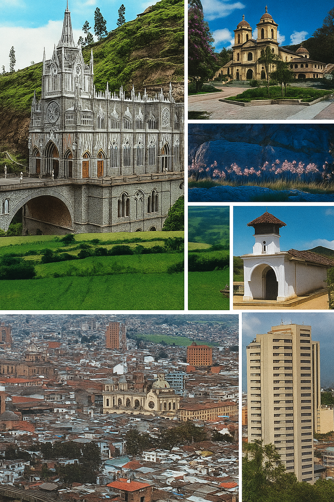
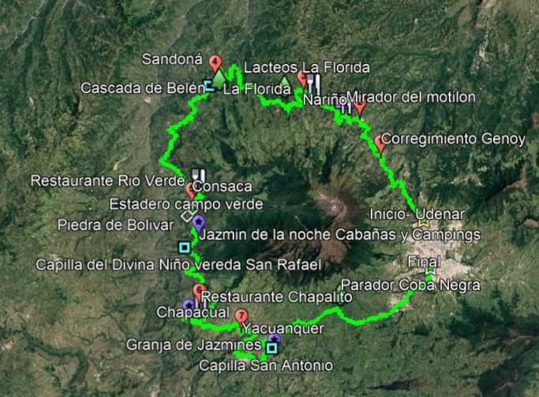
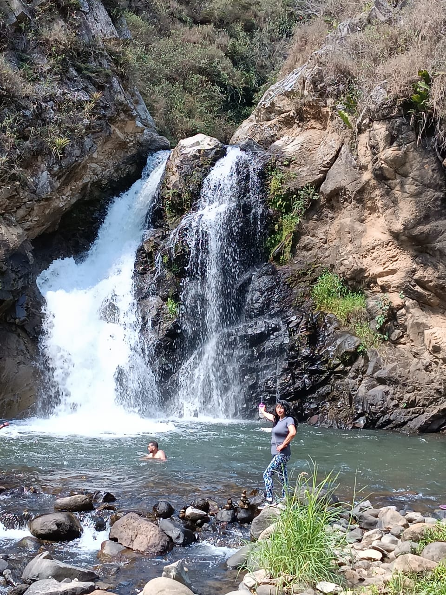
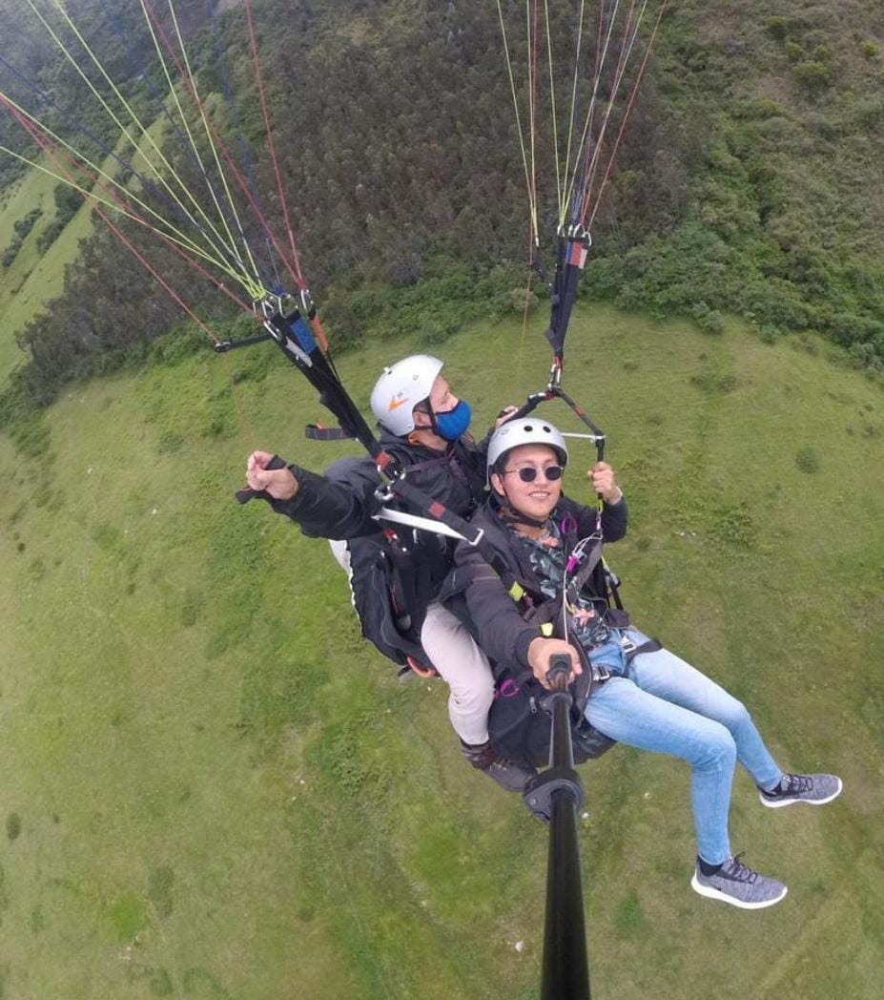
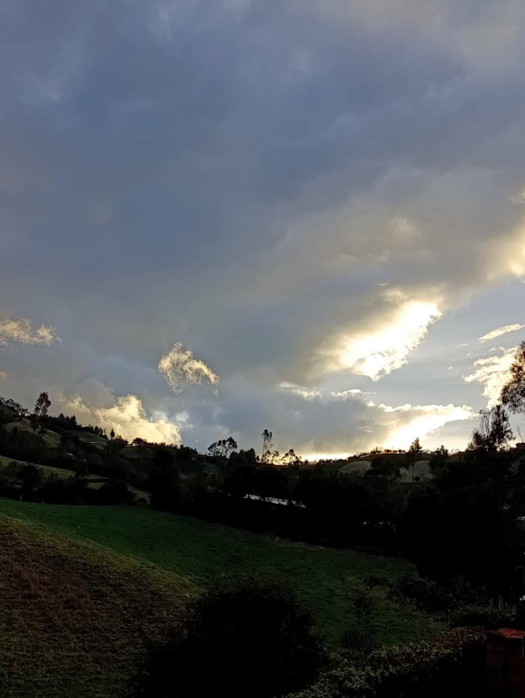

Tour de 7 Horas por los Pueblos Nariñenses
Embárcate en una aventura única recorriendo los pintorescos pueblos de Nariño en nuestras ebikes de última generación. Este tour de 7 horas te llevará por paisajes espectaculares, cascadas impresionantes y pueblos llenos de tradición y cultura.
Disfruta de la gastronomía local, conoce artesanos tradicionales y descubre los secretos mejor guardados de esta hermosa región andina.
Itinerario del Tour
Nuestro tour cuidadosamente planificado te llevará por los lugares más emblemáticos de la región:
- 7:00 AM: Salida desde Pasto con nuestras ebikes
- 8:00 AM: Llegada a Genoy - Visita a la iglesia
- 9:30 AM: La Florida - Degustación de lácteos locales
- 11:00 AM: El Encanto - Visita al pueblo
- 12:30 PM: Sandona - Iglesia y almuerzo típico
- 2:00 PM: Consacá - Opción de camping u hotel
- 3:30 PM: Chapacual - Zona de comida con piscinas
- 4:30 PM: Yacuanquer - Parapente y visita a iglesias
- 5:30 PM: Coba Negra - Parque recreativo
- 6:30 PM: Mister Pollo - Punto de llegada en Pasto
Cada parada incluye experiencias culturales, gastronómicas y naturales únicas que te permitirán conectar con la esencia de Nariño.

Mapa del Recorrido
Sigue nuestra ruta de 7 horas a través de los pintorescos pueblos de Nariño:

Puntos por Visitar

El Encanto
Pueblo pintoresco con arquitectura tradicional y paisajes naturales impresionantes. Ideal para fotografía y conexión con la naturaleza.

Parapente en Yacuanquer
Experimenta la emoción del vuelo en parapente con vistas panorámicas de los valles y montañas de Nariño.

Parque Recreativo La Coba
Área natural perfecta para descansar, disfrutar de actividades al aire libre y conectar con la naturaleza.
Paquetes de Tour
Ofrecemos diferentes opciones para que disfrutes al máximo tu experiencia por los pueblos de Nariño:
Tour Básico
Ebike estándar + guía local + seguro básico. Ideal para quienes buscan una experiencia esencial.
Tour Completo
Ebike premium + guía + todas las comidas + seguro completo. La experiencia más completa.
Tour Grupal
Para grupos de 4+ personas. Incluye ebikes, guía, comidas y fotógrafo profesional.
Tour Premium
Carro eléctrico + guía especializado + comidas gourmet + álbum fotográfico.
Nuestros Aliados
Urkubica - Universidad Mariana
Aliado académico que aporta investigación y conocimiento para el desarrollo turístico sostenible.
- Investigación en turismo sostenible
- Capacitación de guías locales
- Desarrollo de rutas culturales
Vida Saludable
Promoviendo el bienestar integral a través del turismo activo y responsable.
- Educación ambiental
- Turismo saludable
- Actividades al aire libre
Evolti
Energía solar y movilidad sostenible para un turismo responsable.
- Energía solar para nuestras operaciones
- Modalidad de carro para turistas
- Movilidad eléctrica sostenible